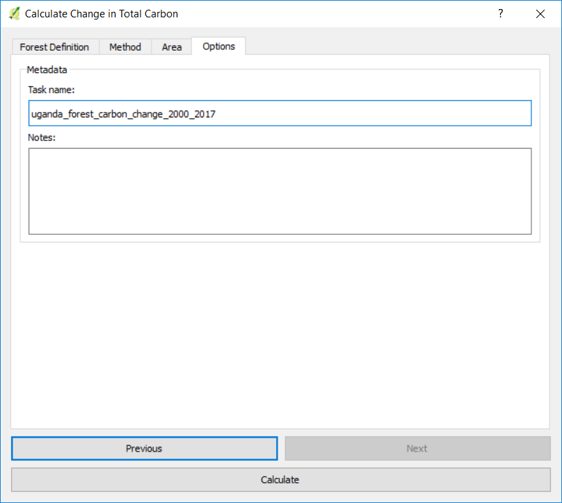
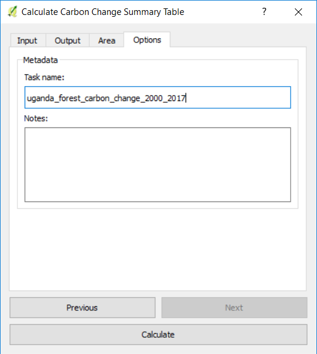

Forest and Carbon Change Tool¶
Objective: Learn how to compute forest cover, forest loss, above and below ground biomass and emissions from deforestation in raster format and tabular outputs with areas estimated.
Estimated time of completion: 20 minutes
Internet access: Required
Compute and download forest and biomass data¶
{kind=link}

The Calculate Indicators menu will open. In that window, click on Calculate Calculate carbon change spatial layers button.

A window will appear with two steps: Step 1 is to Calculate carbon change spatial layers, and Step 2 is to Calculate carbon change summary table for boundary. Step 1 will be addressed first. If the user has already completed this process, skip to step 14 in the guide.

After selecting Step 1, the user will fill out the desired parameters in the Forest Definition tab.

Next, select the desired aboveground biomass dataset and the method for calculating the root to shoot ratio.
In the Area tab define the area of analysis. There are two options:
Use provided country and state boundaries: If you want to use this option make sure the Administrative area option is highlighted, and then select the First Level (country) or Second Level (state or province depending on the country).
Note
The Natural Earth Administrative Boundaries provided in Trends.Earth are in the public domain. The boundaries and names used, and the designations used, in Trends.Earth do not imply official endorsement or acceptance by Conservation International Foundation, or by its partner organizations and contributors.
If using Trends.Earth for official purposes, it is recommended that users choose an official boundary provided by the designated office of their country.
Use your own area file: If you want to use your own area of analysis, make sure the Area from file option is highlighted. Then click Browse and navigate to the folder in your computer where you have the file stored.
When you have selected the area for which you want to compute the indicators, click Next.

In the Options tab you can define the Task name and make some Notes to identify the analysis you are running. What information to indicate is optional, but we suggest noting:

Area of analysis
Dates
Indicators run
When done, click Calculate and the task will be submitted to Google Earth Engine for calculations. You will notice that the Calculate Change in Total Carbon window will disappear and you will be brought back to QGIS.
A light blue bar will temporarily show, indicating that the task was successfully submitted. The analysis will be run in Google servers and could take between 5 and 15 minutes depending on the size of the study area (larger areas tend to take longer).
Note
Refer to the Task status & download tutorial for detailed information on how to check the status of the tasks submitted and for downloading results from Trends.Earth.
10. To view the Google Earth Engine (GEE) tasks you have running, and to download your results, select
the cloud with the arrow facing down icon ( ). This will open up the Download results
from Earth Engine dialog box. Select Refresh list to show the task.
). This will open up the Download results
from Earth Engine dialog box. Select Refresh list to show the task.
The task will state: RUNNING under the Status column if it is still processing. When the task is complete, it will say FINISHED after selecting Refresh List again.

Once the task is FINSHED running, highlight the completed task and select Download Results. Save the task.

You will see a message indicating the task is downloading. Once it is complete there will be a Total carbon (2000, tonnes per ha) and Forest loss (2000 to 2017) outputs in the QGIS window.
If you want, you can add some context information (e.g. country boundaries, roads, and main cities). Refer to the Load results and basemap tutorial for detailed information on loading a basemap.
Compute summary table¶
The Calculate Indicators menu will open. In that window, click on Calculate Calculate carbon change spatial layers button.
Select Step 2: Calculate carbon change summary table for boundary.
Within the Input tab, select an output folder and file name.

Within the Output tab, select Browse to list an output folder and file name.

In the Area tab define the area of analysis. There are two options:
Use provided country and state boundaries: If you want to use this option make sure the Administrative area option is highlighted, and then select the First Level (country) or Second Level (state or province depending on the country).
Use your own area file: If you want to use your own area of analysis, make sure the Area from file option is highlighted. Then click Browse and navigate to the folder in your computer where you have the file stored.
When you have selected the area for which you want to compute the indicators, click Next.
In the Options tab you can define the Task name and make some Notes to identify the analysis you are running. What information to indicate is optional, but we suggest noting:

Area of analysis
Dates
Indicators run
When done, click Calculate and the task will be submitted to your computer locally. You will notice that the Calculate carbon change summary table for boundary window will disappear and you will be brought back to QGIS. A light blue bar will appear in the QGIS window. This is running locally on your computer. DO NOT select x or Cancel until the task is finished!
A window will appear when the summary is complete. Select OK.

If an error window appears, select the Yes and the summary will proceed to open.

The summary table will appear.